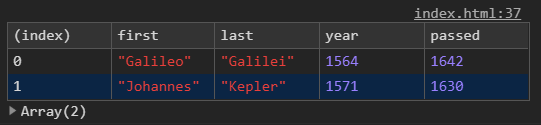
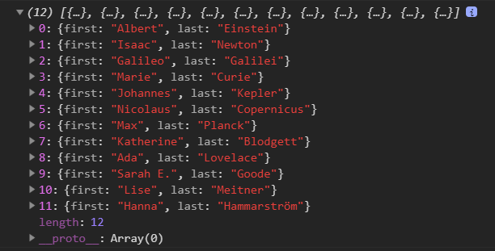
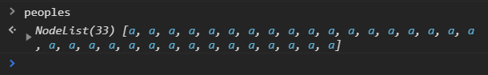
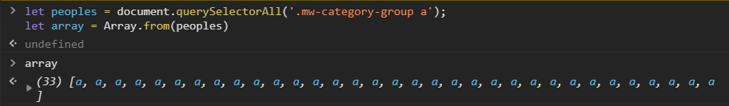
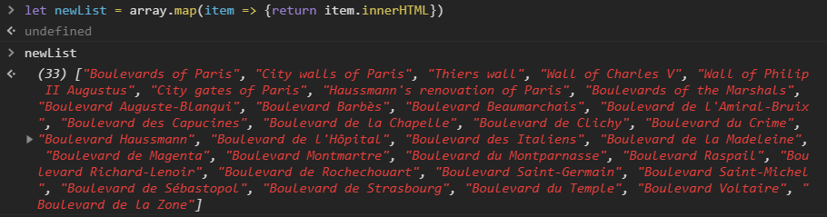
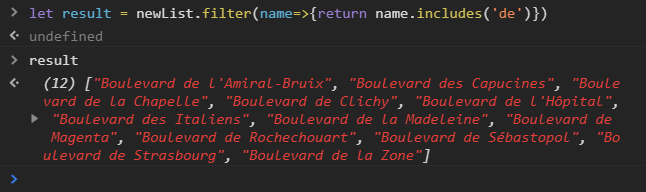
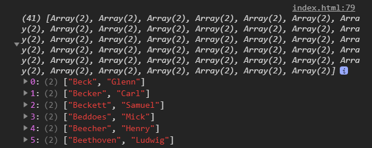
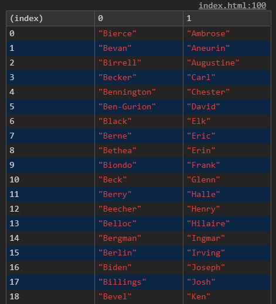
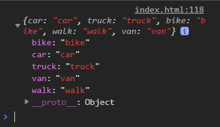

Demo
這周是針對陣列的操作做練習，所以沒有預覽圖！
主要看程式碼和console.log
關於陣列操作的教學我認為吳哲宇老師在Hahow上的教學(圖解)非常容易懂，
不過課程是要收費的，章節31-陣列的批次操作
課程連結
不是要幫他打廣告而是真心覺得解說得很好，偶而忘記還會回去複習一下XD
先來看看我們取得的資料有哪些：
1 | const inventors = [ |
我們有兩筆資料，第一筆看起來是一些偉人吧，姓名和生平，第二筆則是一堆名稱。
第一題
Filter the list of inventors for those who were born in the 1500’s。
我們要去取得1500~1600年代出生的人
關鍵：filter() 詳細介紹:MDN
白話解釋：從陣列裡一筆一筆資料去過濾（篩選），選出符合條件的那筆資料，再回傳產生一個新的陣列。
1 | let question_1 = inventors.filter( item => { |
console.table()可以印出表格，滿酷的

第二題
Give us an array of the inventors’ first and last names
我們要做一筆資料，只含他們的姓名就好
關鍵：map() 詳細介紹:MDN
白話解釋：從陣列裡一筆一筆資料去抓出來去做一件事(涵式)，再把結果放到(產生))一個新的陣列。
1 | let question_2 = inventors.map( item => { |
這裡我們return的是物件，因為需要有first和last的值
產生的結果:

第三題
Sort the inventors by birthdate, oldest to youngest
由老到年輕排列
關鍵：sort() 詳細介紹:MDN
若 sort(a, b) 的回傳值小於 0，則會把 a 排在小於 b 之索引的位置，即 a 排在 b 前面。
若 sort(a, b) 的回傳值大於 0，則會把 b 排在小於 a 之索引的位置，即 b 排在 a 前面。
如果我們是為了比較簡單的數字，可以利用 a 減 b。（由小到大）1
2
3
4inventors.sort((a,b)=>{
return a.year - b.year
})
console.log(inventors)
反之降序1
2
3
4inventors.sort((a,b)=>{
return b.year - a.year
})
console.log(inventors)
寫法二:1
2
3
4
5
6
7inventors.sort((a,b)=>{
if(a<b){
return -1//由小到大
}else(a>b){
return 1 //由大到小
}
})
sort我認為是陣列操作裡面最難理解的，實際運作原理待研究…。
第四題
How many years did all the inventors live?
所有人的年紀加總
關鍵：reduce() 詳細介紹:MDN
白話解釋：我們會有一個暫存值，進入陣列去跟每個值做運算，最後回傳這個暫存值。
1 | let question_4 = inventors.reduce(function(temp,item){ |
- temp : 就是reduce提供我們可以自訂名稱的暫存值
- item : inventors陣列裡面的每個物件。
- 0 : 最後面的0就是預設值。
如果我們用forEach做(有點像是forEach結合我們要的變數?)1
2
3
4
5let temp = 0
inventors.forEach(item=>{
temp += (item.passed-item.year)
})
console.log(temp)
第五題
Sort the inventors by years lived
根據這些發明家的年紀做排序
應該就是第三題的延伸，先算出年紀再做排序。1
2
3
4inventors.sort((a,b)=>{
return (a.passed-a.year) -(b.passed-b.year)
})
console.log(inventors)
第六題
create a list of Boulevards in Paris that contain ‘de’ anywhere in the name
這題好像叫我們直接到這個網站去抓名字裡面含有‘de’的清單。
一步一步取得對象！1
let peoples = document.querySelectorAll('.mw-category-group a');
注意:我們透過document.querySelectorAll()取得的這peoples，它是一個叫做NodeList的類似陣列的東西，他並不具陣列的所有功能。

NodeList不是陣列！這邊有更多介紹
接著透過Array.from()產生我們要的陣列：1
let array = Array.from(peoples)
Array.from() 方法會從類陣列（array-like）或是可迭代（iterable）物件建立一個新的 Array 實體。這邊有更多介紹
結果:

有了這筆資料後，我們再透過map()(或forEach)的方法取出所有姓名。1
array.map(item => {return item.innerHTML})
結果:

最後，我們去過濾/篩選出名字中含有’de’的人1
2
3let result = newList.filter(name=>{
return name.includes('de')
})
結果:

補充:
includes()方法會判斷陣列是否包含特定的元素，並以此來回傳 true 或 false。
第七題
Sort the people alphabetically by last name
透過last name排序長度去排序people這筆陣列。
people這筆陣列中並沒有分出last name或first name，所以我們要透過split()去切割字串1
2
3
4let newPeople = people.map(name=>{
return name.split(', ')//從逗號和空白這邊切開
})
console.log(newPeople)
split()，這裡有詳細介紹
結果:原本的每一筆姓名都被切開成兩個了。

預設的排序順序是根據字串的 Unicode 編碼位置（code points）而定。
1 | newPeople.sort((a,b)=>{ |
結果:可以看到LastName就從字母A開始排序了。

寫法二：透過map去產生帶有物件(lastName,lastName)的陣列後再去排序比較易讀一點。1
2
3
4
5
6
7
8
9
10
11
12
13
14let newPeople = people.map(name=>{
const temp = name.split(', ')//一樣先拆解
return {//再回傳物件
firstName: temp[0],
lastName: temp[1]
}
})
newPeople.sort((a,b)=>{
if(a.lastName>b.lastName){
return 1
}else{
return -1
}
})
這題是按照自己意思去寫的，原始範例寫的排列方式和結果和我想像的按字母排序不太一樣…
第八題
Sum up the instances of each of these
以下陣列每個項目各有幾個,做統計1
const data = ['car', 'car', 'truck', 'truck', 'bike', 'walk', 'car', 'van', 'bike', 'walk', 'car', 'van', 'car', 'truck' ];
所以最後得到的結果需要是一個物件類似這樣:1
2
3
4
5
6let 統計結果:{
汽車:2,
卡車:3,
..
...
}
複習第四題的reduce：
白話解釋：我們會有一個暫存值，進入陣列去跟每個值做運算，最後回傳這個暫存值。
所以,這次我們把暫存值設定成一個物件，初始值則是物件中的屬性。
結構:1
2
3
4
5let result = data.reduce(function(object, item){
//..
//...
return obj
},{})
首先先把物件的樣子先做出來1
2
3
4let result = data.reduce(function(obj,item){
obj[item] = 0
return obj
},{})
有點像我們要的結果了…有五種交通方式

但是我們需要的是正確數量，一開始可能直覺的寫法是後面再加上obj[item]++1
2obj[item] = 0
obj[item]++
但這樣會不斷地把item變成0然後再+1變成0再+1….，永遠只會有1而已
所以我們要怎麼讓obj[item] = 0執行(定義)一次就好?
加入判斷：因為只有一開始obj[item]會是空值，後面就會++了，所以他只會跑一次。
1 | let result = data.reduce(function(obj,item){ |
運作邏輯大概是像這樣：1
2
3
4
5
6
7
8
9
10
11
12
13
14
15
16
17
18
19
20
21
22
23//round1 第1個car來了
result = {
'car'= 0 //car第一次進判斷
}
//round2
result = {
'car'= 1
}
//round3 第2個car來了
result = {
'car'= 2 //不進判斷了,直接第二次遞增
}
//round4 第1個truck來了
result = {
'car'= 2,
'truck'= 0, //truck第一次進判斷
}
//round4
result = {
'car'= 2,
'truck'= 1, //truck第一次遞增
}
//依此類推
不得不說，如果沒看答案我應該永遠想不到有這種方式…陣列的操作一直是我不熟悉的技術之一，但透過這個主題練習真的學到很多！後續可能還會一直翻回來做複習。
不負責任聲明ಥ◡ಥ：
純屬個人筆記，每個範例都有不同的寫法，還有很多細節可以加入，甚至可能有看不到的bug，有任何問題都歡迎提出一起研究哦，我會很感謝您的！- 2018.08.11